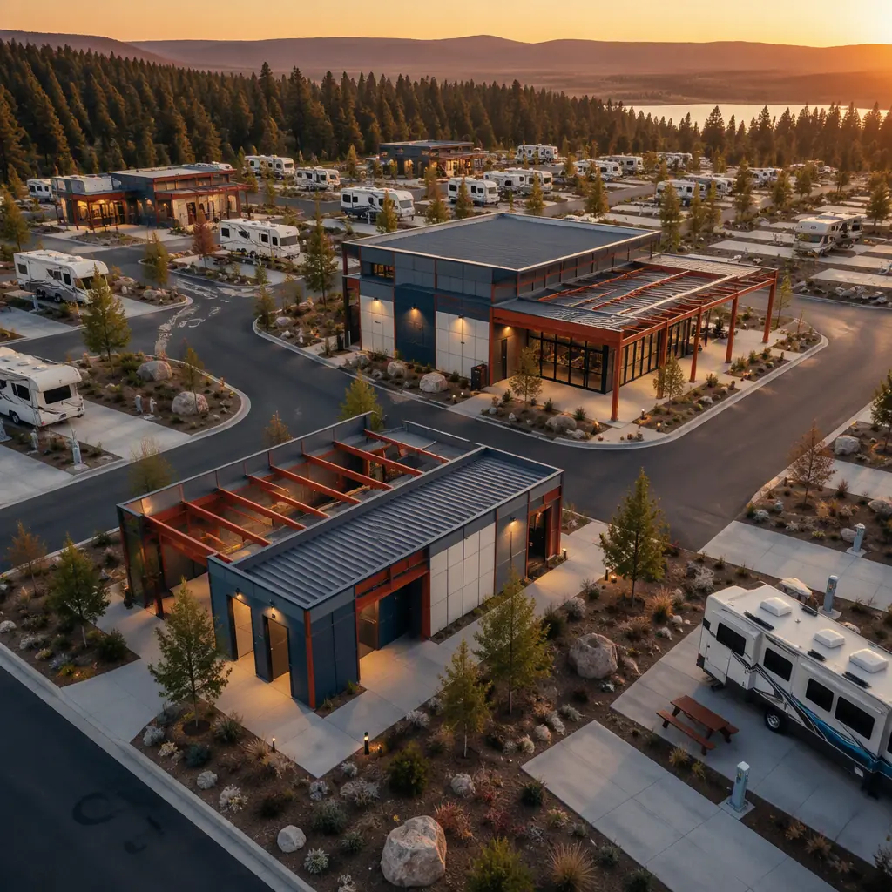
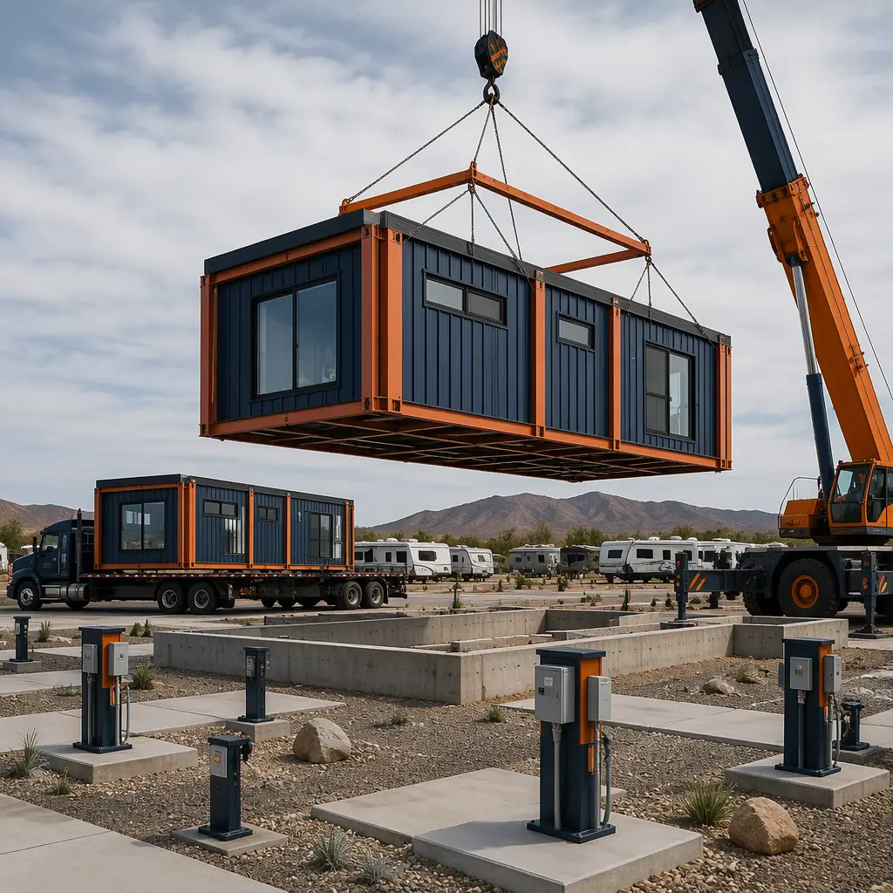
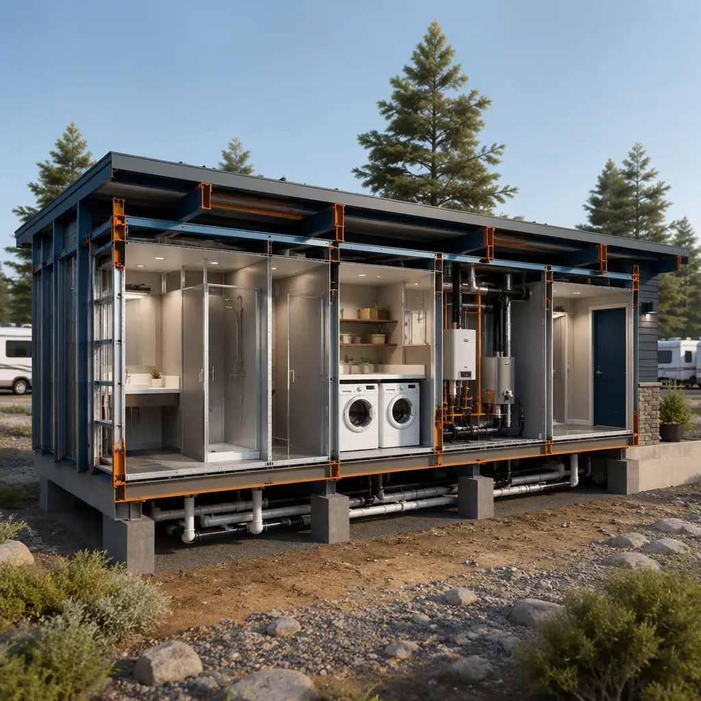
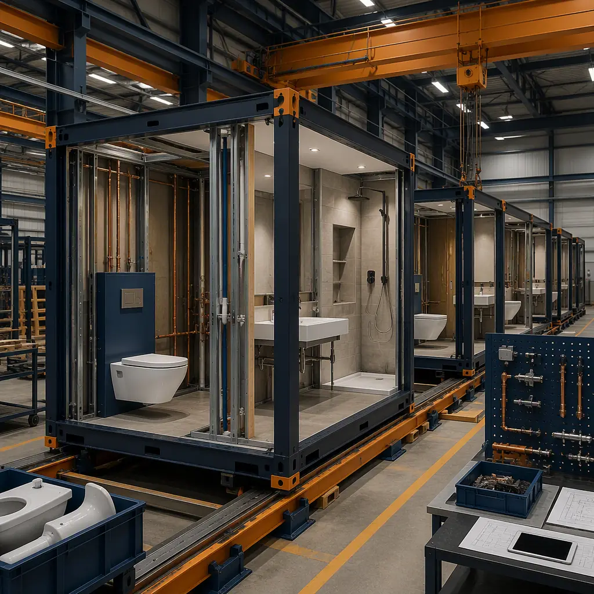

RV park development is in a demand surge: the RV Industry Association reports that 11.2 million US households now own an RV, and campground occupancy rates have climbed past 80% at peak season across popular destinations since 2021. Yet most developers hit the same wall — the buildings. A typical 100-site park needs a bathhouse with 8–12 showers, a camp store and office, laundry facilities, and utility buildings, and conventionally these take 9–14 months of stick-built construction that delays the revenue opening by a full season. Modular prefabricated construction collapses that timeline: factory-built steel-frame modules are manufactured in parallel with site work and set in days, so a park can open 60% faster — often in time for the spring booking season instead of after it. This guide covers the RV park building program, the modular cost structure, and how to phase a campground for early revenue. For the wider hospitality pattern, see our modular resort and extended-stay guide.

The RV Park Development Opportunity
The economics of RV parks have shifted from seasonal hobby to institutional asset class. Occupancy at private campgrounds averaged 68% across the year in 2024 (up from 55% a decade earlier), and premium parks with full hookups command nightly rates of $60–$120. A 100-site park at 70% occupancy and an average $75 nightly rate generates roughly $1.9 million in gross revenue per year before ancillary income from cabins, stores, and activities. Private equity and family offices have taken notice — campground transaction volume has grown every year since 2020. The building program, however, is where projects stall: bathhouses require plumbing-heavy wet room construction, camp stores need retail fit-out, and utility buildings house electrical switchgear, water treatment, and sewer pump stations. These are precisely the building types that factory production handles best, because they are MEP-dense, repeatable, and code-familiar.
What an RV Park Actually Needs
A complete RV park campus is a small collection of specialized buildings, each with its own engineering:
- Bathhouse & laundry building. The most heavily used structure — showers, toilets, sinks, and washers serving every site. Typically 1,200–2,400 sq ft for a 50–100-site park, with 1 shower per 6–8 sites and 1 toilet per 4–6 sites per code. Plumbing density makes this the most expensive building per square foot in the park.
- Camp store & registration office. Check-in, retail, and convenience items. A 600–1,500 sq ft retail module with a service counter, POS, and inventory storage, plus staff office space.
- Utility & equipment buildings. Electrical distribution (often 400–800A service for a full-hookup park), water booster pumps, sewer lift stations, and backflow prevention. These are industrial modules with factory-installed equipment.
- Optional hospitality modules. Rental cabins, glamping units, a pool house, or a clubhouse — revenue generators that most successful parks add in phase two. The modular tourism and eco-lodge guide covers the cabin side of this program.

Why Modular Beats Conventional for Campground Buildings
RV parks are seasonal businesses with hard revenue deadlines — a park that misses the April–May booking ramp effectively loses 20–30% of annual revenue. Modular delivery attacks the two things that kill campground schedules: sequential trades and weather exposure.
- Parallel production. While site contractors grade pads and run utilities, the factory builds the bathhouse, store, and utility modules simultaneously. The critical path shortens from 9–14 months to 3–5 months total, with building set typically taking 2–4 days per structure.
- Weather independence. Wet-room tiling, plumbing rough-in, and electrical work happen in a climate-controlled factory, not in a winter mud field. Parks in northern climates (Michigan, Minnesota, the Northeast) no longer lose the construction season to freeze-up.
- MEP precision. A bathhouse contains more plumbing per square foot than almost any other building type. Factory assembly with pre-tested fixtures reduces on-site coordination errors — the same quality-control discipline documented in modular factory QC systems.
- Code consistency. Park buildings must meet RV park codes (NFPA 1194 in the US), which vary by state. Factory engineering standardizes the compliance package and delivers as-built documentation with every module.

Cost Breakdown — Modular vs. Conventional
| Building | Conventional (Turnkey) | Modular (Turnkey) |
|---|---|---|
| Bathhouse & laundry (1,800 sq ft, 8 showers) | $520–720K | $410–560K (factory-built) |
| Camp store & office (1,000 sq ft retail) | $240–340K | $185–260K |
| Utility / equipment modules (2 buildings) | $180–280K | $130–210K (equipment factory-installed) |
| Site work, pads & utility runs | $380–600K | $350–540K (parallel with factory) |
| Total Buildings + Site | $1.32–1.94M | $1.08–1.57M |
The 15–20% building cost reduction is secondary to the schedule math: opening one season earlier at a 100-site park with 70% occupancy is worth $1.3–1.9 million of gross revenue, which dwarfs the modest construction premium or savings. Full project economics follow the pattern in our 2026 modular cost guide, and the campground building program should be budgeted against modular total cost planning.
Designing the Bathhouse & Laundry Module
The bathhouse is the make-or-break building for guest satisfaction, and it is the most factory-friendly structure in the park. A modular bathhouse arrives with plumbing walls pre-fabricated, fixtures pre-mounted, and mechanical rough-in complete — the module is set on a prepared slab, utility connections are made at the interface points, and the building is operational within days. Key design decisions:
- Fixture count by code. NFPA 1194 and state park codes typically require 1 shower and 1 water closet per 6–10 sites. A 100-site park therefore needs 10–16 showers — sized as a 2,000–2,400 sq ft building or split into two 1,000–1,200 sq ft modules for phased delivery.
- Family suites. Adding 1–2 family bathrooms (private shower + toilet + sink) is the highest-ROI upgrade in modern parks — families with children are the fastest-growing camper segment, and private suites command premium positioning in reviews.
- Ventilation and humidity control. Shower areas generate extreme humidity; factory-installed exhaust systems with corrosion-resistant fixtures prevent the mold problems that plague stick-built bathhouses. The ventilation engineering mirrors modular HVAC and indoor air quality design.
- Durability finishes. Factory-installed FRP wall panels, slip-resistant tile, and stainless fixtures are standard modular options — specified once and repeated across the whole park for consistent maintenance.
The wet-room technology behind modular bathhouses is covered in depth in our prefabricated bathroom pod guide.

Camp Store, Office & Hospitality Modules
The revenue-facing buildings follow the standard commercial module package. A camp store combines retail shelving, a service counter, a small office, and a back-of-house storage room in a 600–1,500 sq ft footprint; the module arrives with the counter and millwork factory-built, and the operator adds shelving and inventory at the site. Registration offices integrate with the store or stand alone with a manager office and staff break room. Parks that add rental cabins, glamping units, or a clubhouse typically do so as phase-two modules on the same foundation pattern — the hospitality building program is documented in modular retail construction and modular resort construction.
Utility & Infrastructure Modules
Full-hookup RV parks consume serious utility infrastructure: a 100-site park with 50-amp pedestals needs a service of roughly 400–800A plus water distribution sized for 100+ simultaneous hookups and a sewer system handling 5,000–8,000 gallons per day at peak. Modular utility buildings house this equipment in factory-built enclosures:
- Electrical module. Main switchgear, panelboards, and metering in a weatherproof steel enclosure — factory-wired and tested, set beside the transformer pad.
- Water booster module. Pumps, pressure tanks, and backflow preventers pre-plumbed on a skid, sized for peak-demand flow.
- Sewer lift station. Grinder pumps and controls in a below-grade or grade-level module, with the control panel factory-integrated.
- Pedestal distribution. While not a building, the 50/30-amp pedestal network is coordinated with the electrical module design so the entire power system is a single engineered package.
The industrial module package behind these structures is covered in modular industrial construction.
Phased Rollout — Open Early, Expand Later
The strongest argument for modular in RV parks is phasing. A developer can open with 60 sites, one bathhouse, and the store in the first season — generating revenue and proving the market — then add 40 sites, a second bathhouse, and cabins in season two as demand materializes. Because each building is a factory-produced module with a known cost and schedule, the expansion is a repeat purchase rather than a new construction project: same design, same approvals, same crane crew. This staged approach also fits financing, since lenders fund phases against actual occupancy rather than speculative full build-out. The expansion pattern is documented in modular building additions and expansions.
Is Modular Right for Your RV Park?
Modular delivery delivers the strongest value for parks with a seasonal opening deadline, for developers building multiple parks (the design is reused across sites at 50–70% lower design cost per park), and for remote or weather-challenged sites where a factory crew is more reliable than a local trades market. For a small 20-site park with one simple building and no schedule pressure, conventional construction remains competitive. For the standard 50–150-site program — bathhouse, store, office, and utility buildings — modular construction converts the building phase from the project's longest risk into its fastest deliverable, with MEP-heavy structures built where they are built best: in the factory.